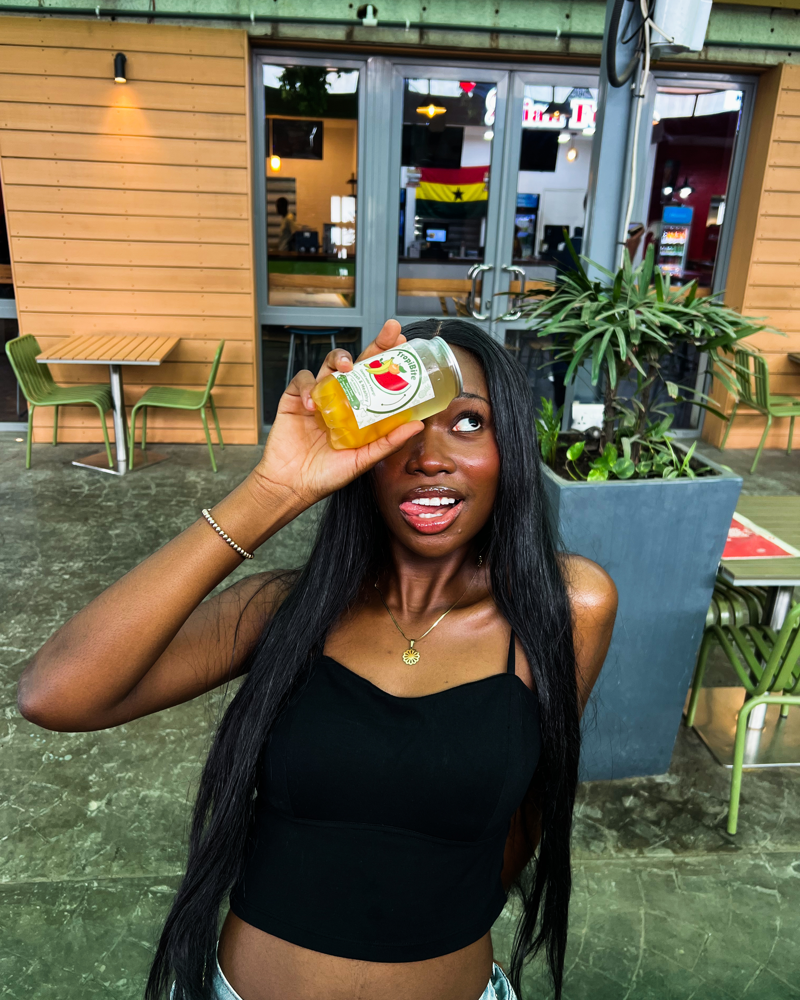
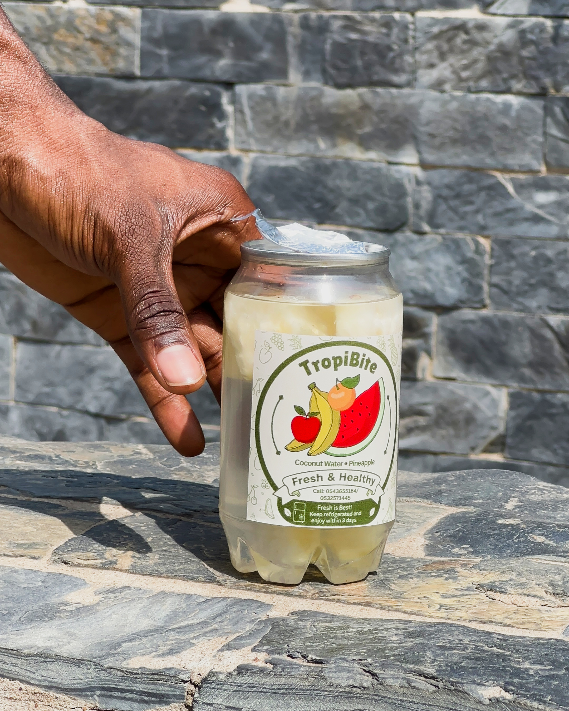
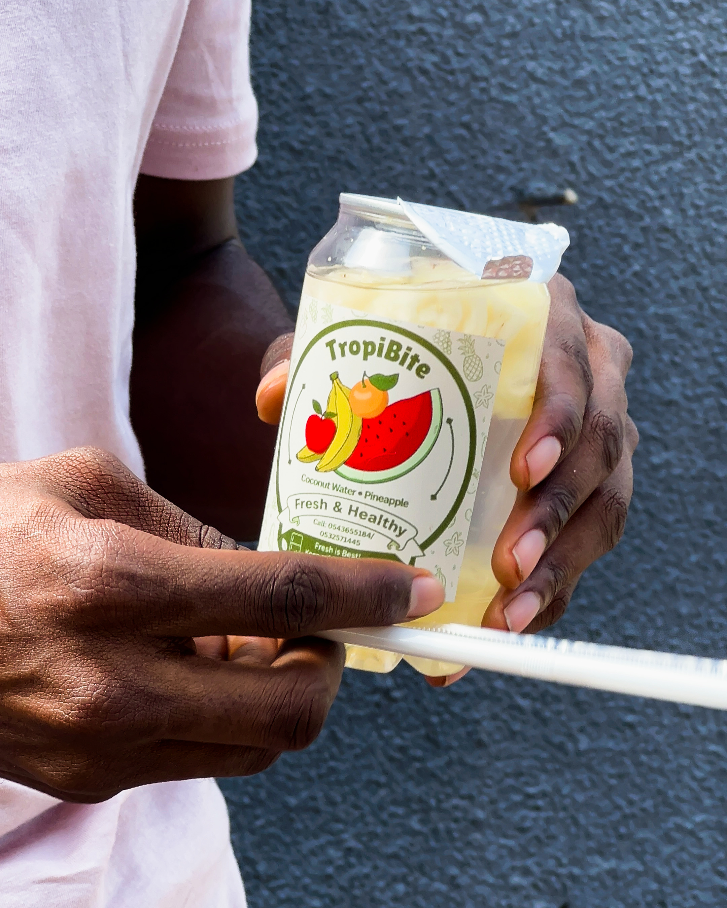
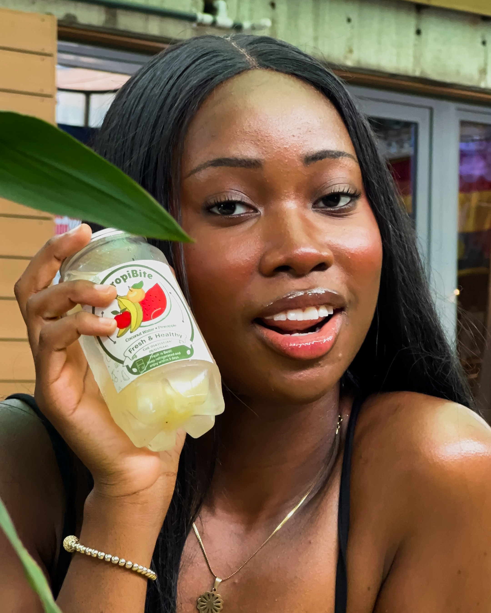
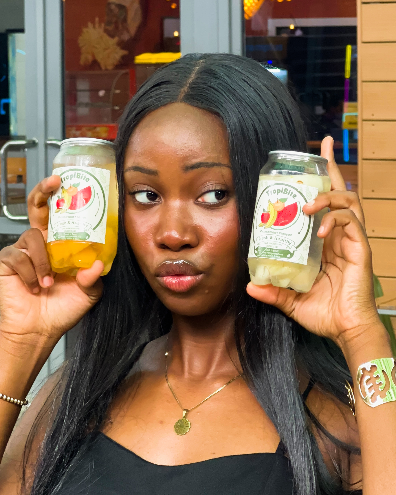
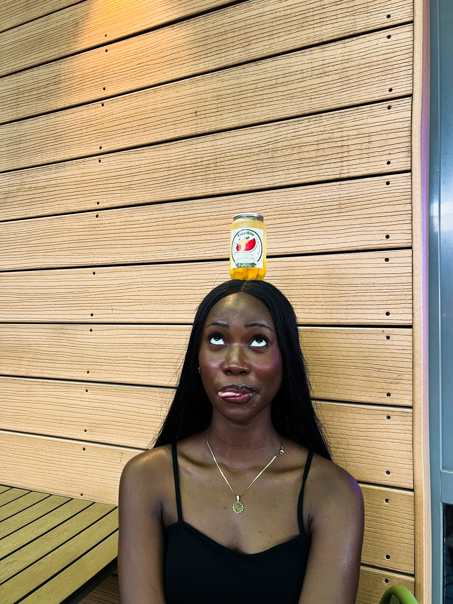

TropiBite
A fresh drink brand selling bottled coconut water with fruit inside.
30-day performance
Key results
30-day views
6,864
Interactions
346
Net followers
+9
01The story
Fresh drinks,
made visual.
TropiBite sells bottled coconut water with fruit inside. I manage its social media and content. In the latest 30-day period, Reels were the main source of reach and the page grew well for its size.
02What I did
My contribution.
I handle creative direction, shoots, editing, and posting for TropiBite’s social channels.
03Showcase / 06
Selected work
Images from the project





